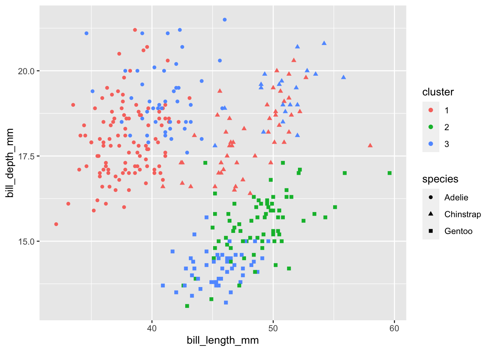
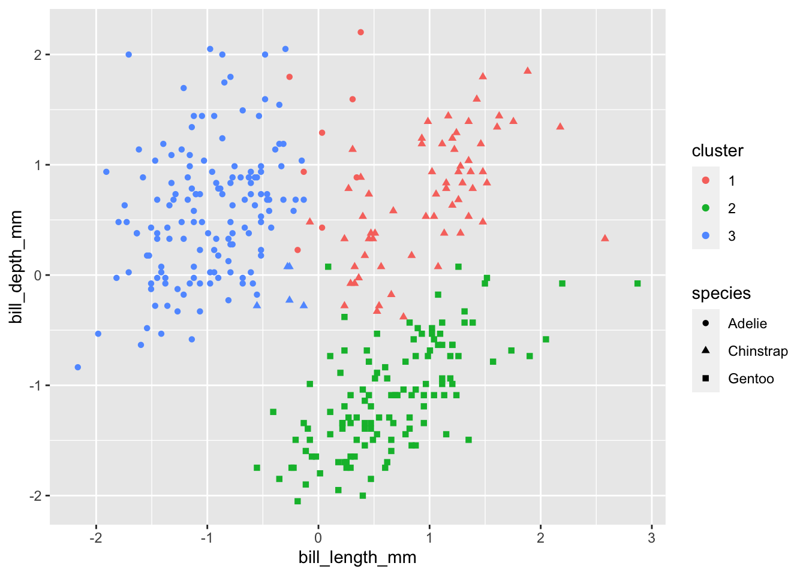

Live code:
kmeans()
We will use the kmeans() function implement \(K\) means! The function requires the following two arguments at a minimum:
x: a data frame or matrix that contains only numeric entriescenters: the number of clusters K you’d like
Optional arguments:
iter.max: the maximum number of iterations allowed (default = 10). Because this is an iterative algorithm, the algorithm will run until convergence. In certain problems, it could take forever until convergence so we might want to force the algorithm from running forever. In other cases, the default of 10 iterations may be too few!nstart: the number of random initializations you’d like (default = 1)
We will remove the year variable and the qualitative island and sex variables from our data. I will retain the species variable even though it’s qualitative for visualization purposes later.
We should set a seed for reproducibility because of the random initial starts!
We can access the cluster assignments from the output:
[1] 1 1 1 1 1 1 3 1 3 1 1 1 1 3 1 1 3 1 3 1 1 1 3 1 1 1 1 1 3 1 1 1 1 1 3 3 1
[38] 1 3 1 1 1 3 1 3 1 1 1 3 1 3 1 3 1 1 1 1 1 1 1 3 1 3 1 3 1 3 1 3 1 1 1 3 1
[75] 3 1 1 1 3 1 3 1 3 1 1 1 1 3 1 1 3 1 3 1 3 1 3 1 3 1 3 1 3 1 1 1 1 1 3 1 3
[112] 1 3 1 3 1 1 1 1 1 1 1 1 1 3 1 3 1 3 1 1 1 3 1 1 1 3 1 3 1 1 1 1 1 1 3 1 1
[149] 1 1 3 3 2 3 2 2 3 3 2 3 2 3 2 3 2 3 2 3 2 3 2 2 2 3 2 2 2 3 2 3 2 2 3 2 2
[186] 2 2 2 2 3 2 3 2 3 3 2 2 3 2 2 2 3 2 3 2 2 2 3 2 3 2 3 2 3 2 3 2 3 2 3 2 3
[223] 2 2 2 3 2 3 2 3 2 3 2 3 2 3 2 3 2 3 2 2 2 3 2 3 2 2 3 3 2 3 2 2 2 3 2 3 2
[260] 3 2 2 2 3 2 3 2 3 2 2 3 2 2 2 1 1 1 1 1 3 1 1 3 1 1 1 1 3 1 3 1 1 1 3 1 1
[297] 1 1 1 3 1 1 1 3 1 3 1 3 1 1 1 3 1 3 3 1 1 1 1 3 1 3 1 1 1 3 1 3 1 1 1 3 1
[334] 1 3 1 1 3 1 1 3 1Here we visualize the cluster assignments along with the true species to see if the clusters align with the species. I arbitrarily choose two of the variables for the axes. Doesn’t look too great…

Standardizing
Remember, we try to minimize the total within-cluster-variation, which we define using pairwise squared Euclidean distance. Whenever distances are involved, we should know by now that variables being on different scales can have large implications for the results obtained. What happens if we standardize all of our quantitative variables?

Looks much more reasonable!
Other output
We can obtain the WCV for each cluster (withinss), as well as the total (sum) WCV (tot.withinss). You can also find the number of observations in each cluster from size, and the final centroids using centers.
[1] 81.56839 143.15025 155.25908[1] 379.9777[1] 71 123 148 bill_length_mm bill_depth_mm flipper_length_mm body_mass_g
1 0.8898759 0.7564847 -0.3004658 -0.4487199
2 0.6562677 -1.0983711 1.1571696 1.0901639
3 -0.9723116 0.5499273 -0.8175594 -0.6907503